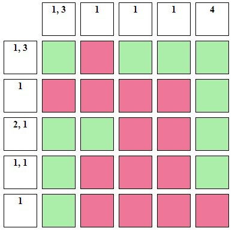

Perimeter Mine Sweeper
How to Play
- The numbers along the top and side indicate the length of continous safe squares.
- There maybe 0 or more unsafe squares before or after the listed groups
- If more than one number is listed, it means there is at least 1 unsafe square between groups.
- Clicking a square marks it yellow, clicking it a second time removes the color.
- Click "Reveal" below the map to show the answer and see how you did.
- Here is a revealed sample map:

- Customizing the map:
- Rows and Columns control the number of each (5 to 20).
- Threshold determines the likelihood of switching from "safe" to "unsafe" and back.
Higher is more likely.